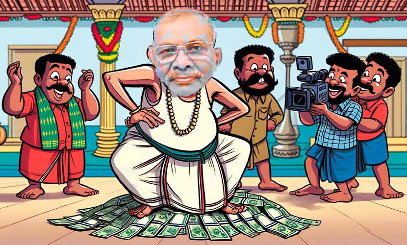
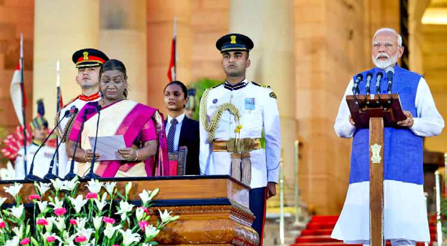
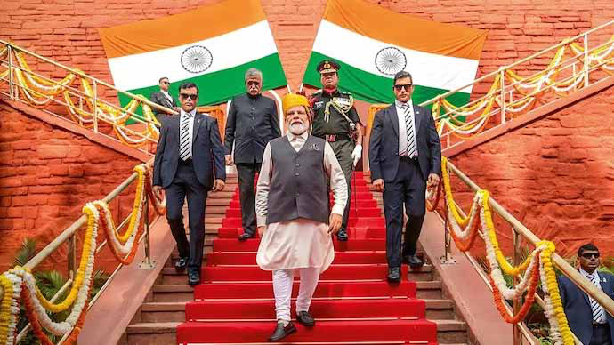
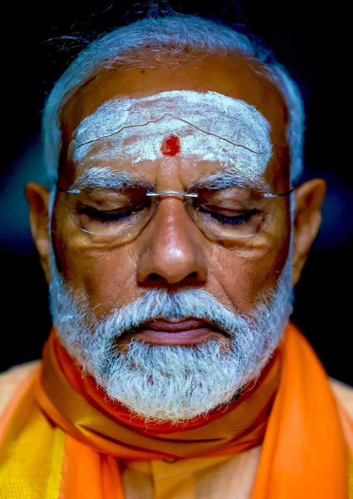
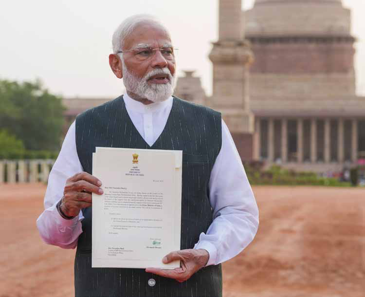

Thiyagi: Dancing on the Money, Literally
Thiyagi: Dancing on the Money, Literally
Jaffna Monitor
hellojaffnamonitor@gmail.com
20
C
ontroversy continues to surround
Thiyakenthiran Vamadeva, commonly
known as "Thiyagi," the owner of TCT
Supermarket in Nallur and the chairman of
Thiyagi Charitable Trust Jaffna.
Ironically, the name "Thiyagi," meaning
sacrificer, was self-bestowed, reflecting his self-
aggrandizing character. His recent public aid
distribution events, ostensibly aimed at helping
the impoverished, have drawn widespread
criticism for their degrading nature. Reports
indicate that beneficiaries are often made to
wait for extended periods under the scorching
sun, subjecting them to unnecessary hardship
and indignity.
Adding to the controversy, several videos have
surfaced showing Thiyagi dancing to MGR
songs. In these videos, he is seen forcefully
inviting some of the girls who came to receive
aid and dancing with them against their will.
Thiyagi: Dancing on
the Money, Literally
Jaffna

Jaffna Monitor
hellojaffnamonitor@gmail.com
21
These actions have not only
raised concerns about respect
for the recipients but have
also intensified scrutiny over
Vamadeva's sources of wealth,
behavior, and mental stability
within the local community.
Thiyakenthiran Vamadeva,
known as "Thiyagi," announced
that he would be distributing
donations and aid on June 7th
to celebrate his daughter's 40th
birthday. This announcement
led to thousands of people
gathering on Navalar Road,
where his supermarket is
located, resulting in a massive
traffic jam. The police were
initially called to regulate
traffic and manage the crowd,
but their efforts proved
insufficient, necessitating the
intervention of the army to
control the situation. Many
waiting in the long queue
under the scorching sun for
a few thousand rupees of
donations were disabled or
physically unwell.
In a disturbing incident
captured on video, Thiyagi was
seen snatching a disabled boy
from his mother's arms and
holding him while dancing
to an old MGR song. The
discomfort and physical pain
of the child was clearly visible,
exacerbating public outrage.
This act has been widely
condemned as insensitive
and exploitative, highlighting
Thiyagi's blatant disregard for the dignity and well-being
of vulnerable individuals.
During his aid distribution event, Thiyakenthiran
Vamadeva, known as "Thiyagi," invited numerous
YouTubers to give publicity to the ceremony. In an
interview with a female YouTuber, Thiyagi claimed he
does not respect money. To emphasize his point, he
took a bundle of 5000 rupee notes from his shirt pocket,
amounting to lakhs of rupees, and threw it on the ground,
stepping on it. This act, particularly the disrespect shown
towards money—a symbol of prosperity and the goddess
Lakshmi in local culture—has infuriated many in Jaffna,
who view it as an affront to their values and struggles.
Many locals have asked, "Can one do nonsense just
because they have money?"
Thiyagi stepping on a bundle of 5000 rupee notes
Jaffna Monitor hellojaffnamonitor@gmail.com 22 The incident sparked a backlash on social media, with even those who once benefited from his aid questioning the dignity of receiving money in such a degrading manner. Thiyagi further exacerbated the situation by declaring that he fears no one, including the President of Sri Lanka. He stated that if the President wished to meet him, he should come to him. While some locals interpreted this as a symbol of self-respect, Thiyagi's subsequent public request for endorsement of his aspiration to become the Governor of the Northern Province fueled widespread ridicule. Adding to the controversy are allegations regarding the origins of Thiyagi's wealth. Credible sources claim that the money flaunted by Thiyagi does not originate from his supermarket business, as he claimed, but rather from questionable investments in Europe, including Switzerland. It is alleged that these funds are transferred to Sri Lanka through various channels. In social media posts, many have started highlighting how Thiyagi seems more focused on self-promotion than on genuinely helping the poor. One user recounted an incident where they approached Thiyagi to help a person needing an immediate kidney transplant. Instead of providing immediate assistance, Thiyagi told them to bring the patient to his New Year event, where he would distribute money, and asked them to stand in line, even though the patient could barely stand. The Facebook user angrily questioned Thiyagi's motives, suggesting he wanted to use the patient's plight to showcase his generosity to the world rather than offering sincere help. People have also pointed out that if Thiyagi's intentions are indeed to help others without any expectations, there are many ways to do so without subjecting the poor to indignity. Rather than calling them en masse and throwing money, which they likened to throwing food to stray dogs, they argue that he should adopt a more respectful approach. If Thiyagi genuinely wants to help, he should avoid subjecting the poor to the hardship of standing in line under the scorching sun, particularly those who are differently-abled, visually impaired, and mothers with infants. Instead, he could collaborate with the Grama Niladhari office and Pradesha Saba office to identify those in need and assist them directly. While it is true that Thiyagi is one of the rare individuals who provide aid to the poor in Jaffna and has donated crores worth of aid, locals pointed out that he seems more interested in showcasing himself as a 'Vallal' (philanthropist) in the style of MGR than in truly helping the poor. They highlighted that this is where the problem lies entirely.
Jaffna Monitor hellojaffnamonitor@gmail.com 23 I ndian Prime Minister Narendra Modi has assumed office for a third consecutive term, a rare achievement in independent India, previously accomplished only by the country's first Prime Minister, Jawaharlal Nehru. However, Modi's political muscles aren't as flexed as they were in 2014 and 2019. Back in 2014, the BJP secured 282 seats, and the National Democratic Alliance (NDA) coalition, a merry band of center-right and right-wing political parties led by the BJP, won a total of 336 seats. In 2019, they leveled up, with the BJP winning 303 seats and the NDA securing 353 seats. This time, though, it's a bit more like a game of political Twister, with fewer solid footings and more balancing acts. In the 2024 elections, the BJP secured only 240 seats, and the NDA coalition achieved a slim majority with 293 seats. Despite this decline, Modi's continuation marks a significant milestone in Indian politics, becoming India's second Prime Minister to serve three consecutive terms. Modi led a 72-member Union Council of Ministers into office at a grand swearing-in Modi's Third Term: From Solo Act to Needing Backup Singers By: Arul

Jaffna Monitor hellojaffnamonitor@gmail.com 24 ceremony at Rashtrapati Bhavan, complete with all the pomp and circumstance. This new cabinet, a lively mix of seasoned veterans and fresh faces, is geared up to tackle the challenges ahead and drive India toward progress. However, nearly 20 of them hail from political families, proving that dynastic politics is not just a Congress tradition. Congress leader Rahul Gandhi couldn't resist taking a jab at the Modi government, dubbing the NDA ministry a "Parivar Mandal" (family club), adding a splash of humor to the political theater. PM Modi's cabinet features prominent BJP leaders such as Rajnath Singh, Amit Shah, Nitin Gadkari, and JP Nadda. Notably, with JP Nadda, the current BJP president, returning to the cabinet, it signals that the party might soon appoint a new president, in line with its "one man, one post" policy. The cabinet also includes Nirmala Sitharaman and S. Jaishankar—two Tamils—who continue to handle the crucial ministries of Finance and External Affairs, respectively, just as they did in the previous Modi regime. The irony, however, is that both rarely identify themselves as Tamils. Tamil Nadu might be scratching its head, wondering, "Are they really one of us?" Additionally, Tamil Nadu has representation in the form of L. Murugan, the Dalit face of the Tamil Nadu BJP. Despite losing his seat in Nilgiris to DMK heavyweight A. Raja, Murugan was sworn in as Minister of State in the Ministry of Information and Broadcasting of India. He previously served as MOS in the last Modi administration as well. The Council of Ministers includes 30 Cabinet Ministers, five Ministers of State with Independent Charge, and 36 Ministers of State. Notably, seven former chief ministers have been sworn into the new council, including Prime Minister Narendra Modi, who previously served as the Chief Minister of Gujarat. The other former C.M.s are Shivraj Singh Chouhan (Madhya Pradesh), Rajnath Singh (Uttar Pradesh), Manohar Lal Khattar (Haryana), Sarbananda Sonowal (Assam), H.D. Kumaraswamy (Karnataka), and Jitan Ram Manjhi (Bihar). Additionally, actor-

Jaffna Monitor hellojaffnamonitor@gmail.com 25

Jaffna Monitor hellojaffnamonitor@gmail.com 26 turned-politician Suresh Gopi, the BJP's first Lok Sabha MP from Kerala, has been appointed Minister of State for Tourism. Significant representation has been given to key states like Bihar and Uttar Pradesh, with Bihar securing four cabinet berths and Uttar Pradesh receiving nine ministerial positions. The cabinet also reflects a diverse composition, with 42 ministers hailing from the Other Backward Class (OBC), Scheduled Caste (S.C.), and Scheduled Tribe (S.T.) communities. However, it is notable that there is no Muslim representation in the new ministry, with not a single Muslim included among the 71 ministers. "This team of ministers is a great blend of youth and experience; we will leave no stone unturned in improving people's lives. I look forward to serving 140 crore Indians and working with the Council of Ministers to take India to new heights of progress," PM Modi said in a post on X after the ceremony. Shifting Political Landscape With all of India's 640 million votes counted after a six-week-long election, the Bharatiya Janata Party (BJP), along with its National Democratic Alliance (NDA), has secured a majority, albeit with a notable reduction in their seat tally compared to the 2019 elections.

Jaffna Monitor hellojaffnamonitor@gmail.com 27 In contrast, the opposition INDIA alliance, spearheaded by Rahul Gandhi's Indian National Congress (INC), made remarkable gains, securing 232 seats. The Congress party itself saw a significant increase, winning 99 seats compared to just 52 in 2019. Key States and Shifting Loyalties Uttar Pradesh (UP), India's most populous state, has always been a crucial battleground. In 2019, the NDA won 64 of UP's 80 seats, with the BJP taking 62. However, in 2024, the INDIA alliance made significant inroads. The Samajwadi Party (S.P.) won 37 seats, and the Congress took six, totaling 43 seats for the opposition. The BJP managed to win only 33 seats, with its allies securing three more. A stunning loss for the BJP occurred in the Faizabad constituency, home to the Ram temple in Ayodhya, a cornerstone of the BJP's Hindutva campaign. Despite Modi consecrating the temple in January, the BJP lost this symbolic seat. Post-election videos reveal widespread public resentment as the BJP-ruled state government in Uttar Pradesh demolished hundreds of houses and shops to create a grand pathway to the temple. This heavy-handed approach sparked a significant backlash against the ruling government at both the state and central levels. When we contacted a few Delhi BJP leaders, they candidly admitted that, with the consecration of the Ram temple, every BJP leader in UP thought they were going to have a cakewalk in the election. However, the shrewd Samajwadi Party leader Akhilesh Yadav had other plans. While Ayodhya voters support the Ram temple, they prioritized their basic needs when faced with the choice between Ram, Food, and shelter. As a saying in the Hindi heartlands goes: "Pehle bhojan, phir aashray, aur phir mandir." ("Food first, shelter second, and temple third.") Clearly, the voters took this seriously. In Maharashtra, another key state, the BJP and its allies suffered significant losses. The INDIA alliance, which includes the Congress and splinter groups of Shiv Sena and the Nationalist Congress Party (NCP), won 30 of the state's 48 seats, with the Congress alone winning 13. The BJP secured only nine seats. Historical Context and Political Evolution Prime Minister Narendra Modi's BJP and its right-wing predecessors have risen from political obscurity to dominate India's parliament. The BJP first came to power with a coalition government for just 13 days in 1996, subsequently ruling from 1998 to 2004. After a surprise loss to a Congress-led coalition in 2004, the Congress governed until 2014 under Prime Minister Manmohan Singh. However, from 2014 onward, it has been Modi's era, with him enjoying immense public trust and being seen as an unbeatable leader. However, this election has shown a shift, as the BJP did not secure a single-party majority and now relies heavily on its allies. Despite this, in Indian politics, anything can happen. The BJP could still emerge as the single largest party by... let's just say, "convincing" a few M.P.s from other parties to switch sides or by sending a few friendly visits from the CBI and other investigating agencies to targeted M.P.s—a tactic they seem to have perfected with a wink and a nudge.